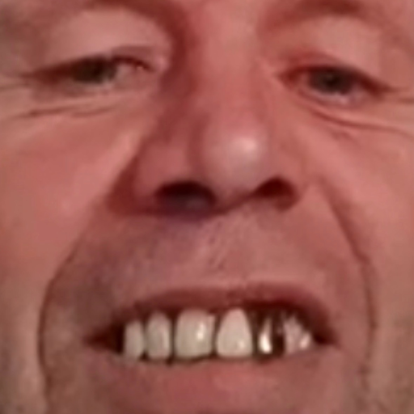

?
Я
…
ожидание

alloconnectЗвонки, демонстрация экрана, чат и файлы с друзьями. Напрямую, без серверов. Первый раз — короткий код дружбы через любой мессенджер, дальше — из списка друзей в один клик.
Один короткий код — и друг в списке: звони в один клик, а 💬 — чат и файлы без звонка.
Тестовая сборка: пишет подробный лог звонков. Когда стрим лагает — нажми Ctrl+Shift+L, в логе появится метка.